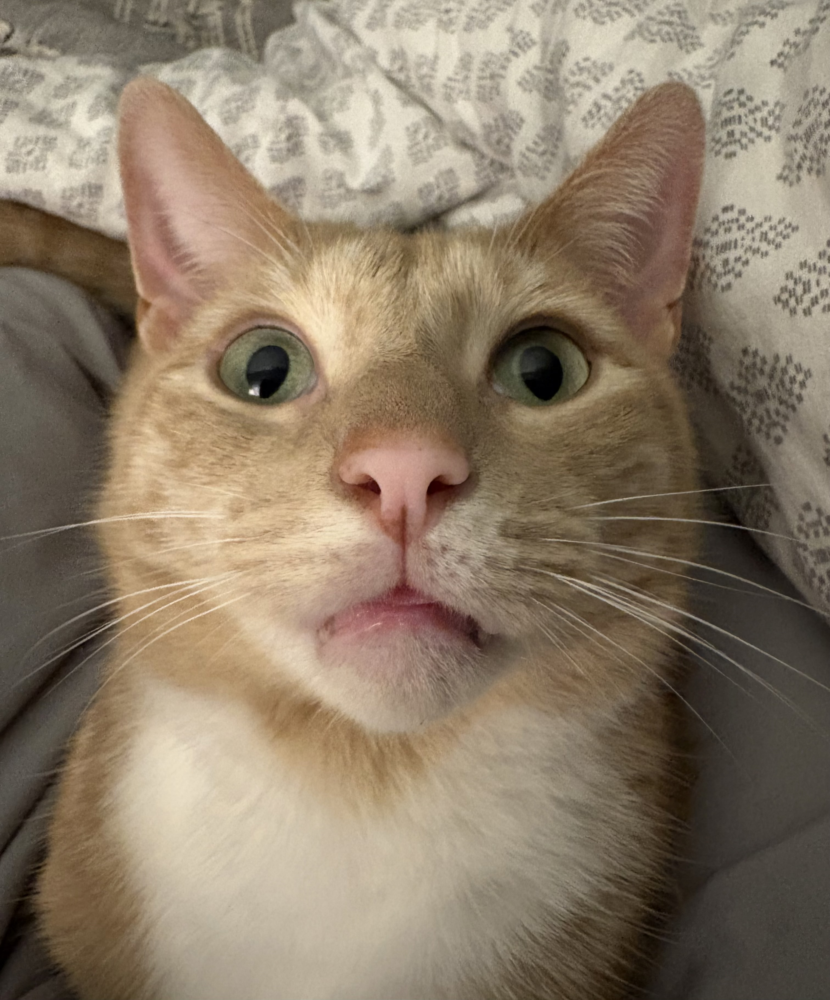

Varied Personalities
Domestic Shorthair
Cats with short coats and a huge variety of colors, patterns, and individual personalities.
Discover more →Welcome to The Cat Club! Discover amazing cat breeds, learn surprising feline facts, and find helpful tips for giving your furry friend a happy and healthy life.
Explore Cat Breeds →
Explore some popular cat breeds.
Cats with short coats and a huge variety of colors, patterns, and individual personalities.
Discover more →
Recognized for its luxurious coat and distinctive round face. Regular grooming is important.
Discover more →
Known for a dense coat, round face, and sturdy appearance.
Discover more →Everything you need to know about our feline friends.
Learn about different breeds, coat types, appearances, and common personality traits.
Explore Breeds →Discover interesting facts about cat behavior, senses, history, and special abilities.
Discover Facts →Find tips about feeding, grooming, exercise, health, and keeping cats safe at home.
Learn Cat Care →Here is a little something for curious cat lovers.
A cat's nose print is unique, much like a human fingerprint.